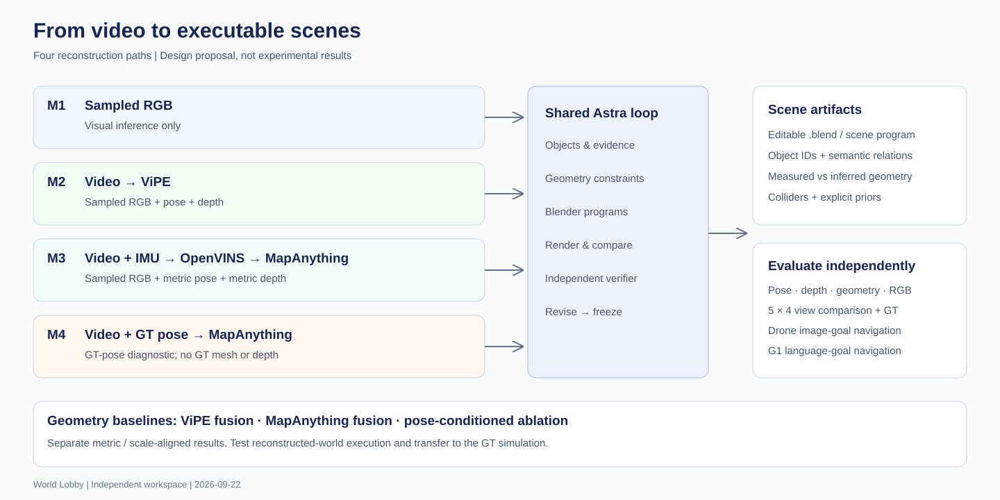
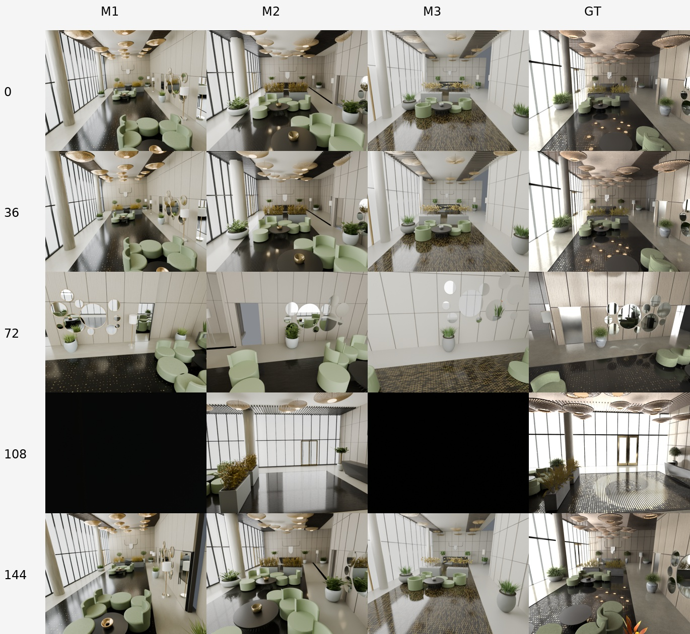
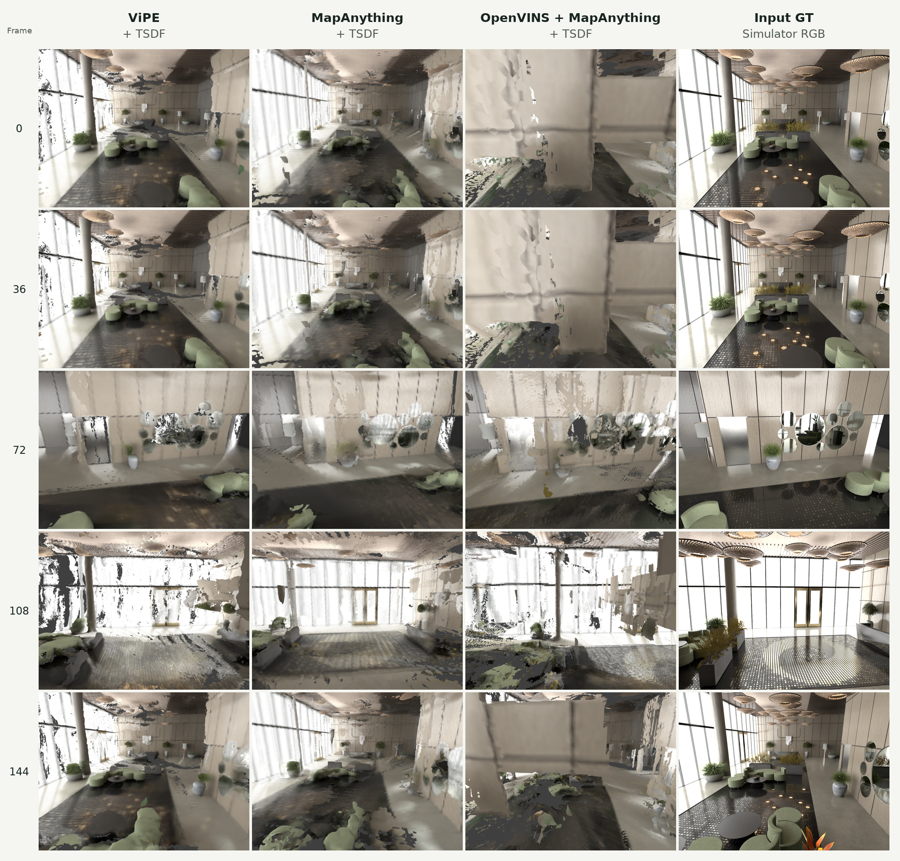
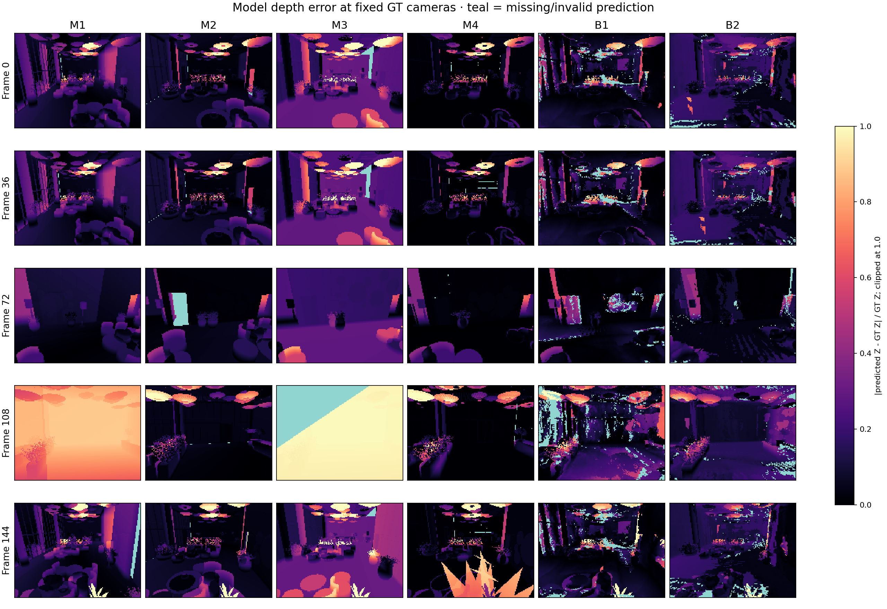
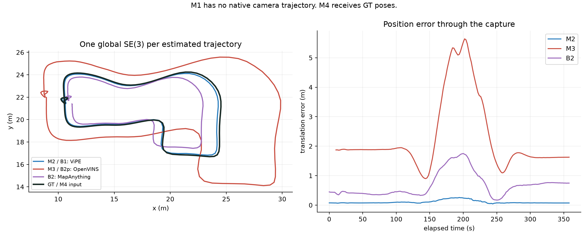
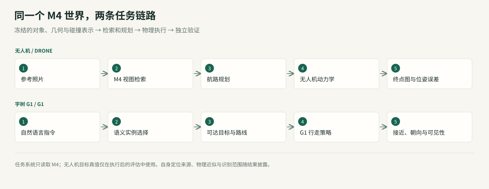
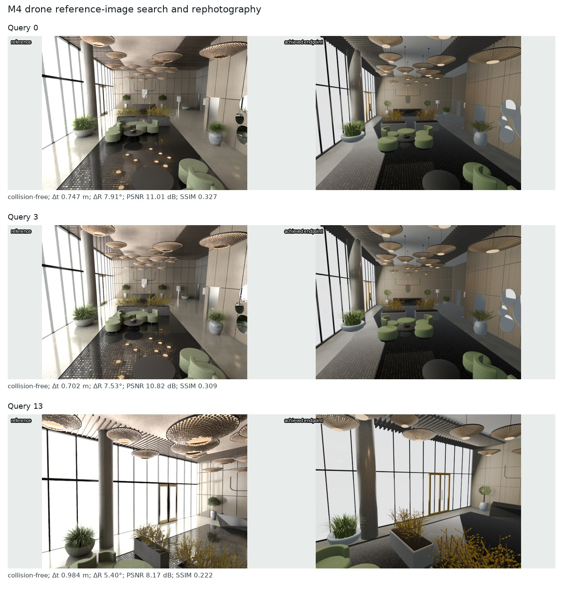
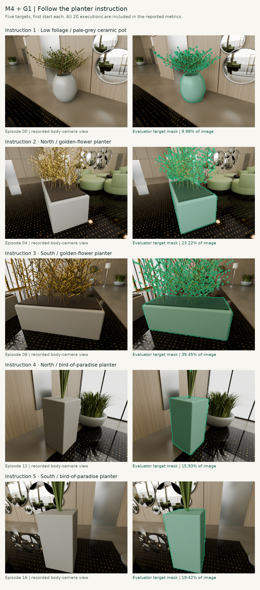

一张三维地图，能不能同时成为设计文件、几何测量结果和机器人的工作环境？
我们让 GPT‑6 Astra 读取图像和不同精度的几何信息，调用 Blender 从空场景构造对象，再通过渲染检查和独立审查修订。输出包含可编辑几何、材质、对象名称、空间关系、相机和碰撞代理。它使一个具体的新工作流成为可能：用语言和程序组织场景，用测量约束场景，再让任务检验场景。
这次实验得到两个并存的结果。通用视觉编程模型能够把观测变成结构化、可运行的三维资产；它仍会继承上游定位错误，并生成看起来合理却与原场景不一致的结构。 给定 GT 相机位姿时，模型到 GT 的平均表面距离为 6.9 cm；使用本次 OpenVINS 轨迹时，这一误差为 45.9 cm。本次下游实验统一使用 M4，分别检验语言目标导航与参考图复拍；到达目标区域和准确复拍是不同的要求。
我们将这些差异连同失败一起公开。所有数字来自一个静态仿真大厅、每条路线一次工程运行。它们可以解释这个案例，尚不足以证明跨场景优势或行业替代。
从同一段视频出发
数据来自 World Lobby 仿真场景：约 360 秒、8,999 帧 1280×960 RGB、89,999 个同步 IMU 样本。RGB 为 25 Hz，IMU 为 250 Hz。我们每 50 帧取一张，形成 180 个建模视角。
仿真提供了可检查的相机和几何真值，但这些答案不默认开放给建模器。M2、M3、M4 分别由干净的 Astra 会话建模，只读取各自输入包；M4 额外获得 GT 相机位姿。GT 网格和深度只进入冻结后的评价器。历史纯视觉 M1 保持原样，预算与新运行并不相同。
{kind=link}

| 方法 | 允许输入 | 几何来源 | Astra / Blender 的工作 |
|---|---|---|---|
| M1 · 纯视觉 + Astra | 180 张采样 RGB | 视觉推断，无测量尺度 | 推断布局，编写对象与材质 |
| M2 · ViPE + Astra | 完整视频，再选取 180 帧几何 | ViPE 相机位姿与近米制深度 | 将测量组织为对象化场景 |
| M3 · OpenVINS + MapAnything + Astra | 视频、IMU、相机–IMU 标定 | OpenVINS 米制位姿 → MapAnything 深度 | 结合图像、位姿、深度建模 |
| M4 · GT 位姿 + MapAnything + Astra | 视频及 GT camera pose | GT 位姿 → MapAnything 深度 | 与 M3 · OpenVINS + MapAnything + Astra 相同类型的建模流程 |
M1 检验图像理解能走多远。 没有外部深度和相机轨迹，尺寸属于视觉推断。展示时使用一次公开的 GT 辅助 Sim(3) 配准，其中尺度约为 0.690；这不构成米制尺度恢复。
M2 引入视频几何。 本次 ViPE 为 RGB-only：GeoCalib 初始化内参，DROID 风格的学习型单目 SLAM、前后端束调整与非关键帧位姿补全生成轨迹，过程中优化内参。关键帧深度先验为 UniDepth V2 small（lpiccinelli/unidepth-v2-vits14），提供学习得到的近米制尺度；没有输入 IMU、外部位姿或 GT 尺度。
最终深度使用 adaptive_unidepth-s：实现根据全轨迹投影地图的最低覆盖分数，选择直接 UniDepth 深度（低于 0.3）或以 SLAM 稀疏深度为提示的 PriorDA。我们用冻结地图与相机文件独立复算覆盖分数，得到 0.79，高于 0.3 阈值，确定本次 180 个采样帧使用 SLAM 深度引导的 PriorDA；UniDepth V2 small 是上游关键帧深度先验。本次设置为 no_vda，没有 Video Depth Anything。ViPE 处理完整 8,999 帧，Astra 与 B1 使用同一组 180 帧采样输出。“近米制”须通过真值验证，不等于准确米制尺度。
M3 引入惯性测量。 OpenVINS 输出保留物理量纲的位姿，MapAnything 以 RGB、内参和位姿共同推理深度。OpenVINS 在约 8.6 秒后才初始化成功，因此 180 个采样位姿中实际有 175 个。我们保留这项缺失。 实际链路为 RGB + 标定内参 + OpenVINS 米制 camera-to-world 位姿 → MapAnything 光轴 Z 深度 → Astra / Blender。已核对 175 帧输入位姿与 OpenVINS 输出一致，深度原样进入建模包；MapAnything 的位姿与尺度条件均启用，未用 GT 修正尺度。轨迹评测继续使用 OpenVINS 位姿，MapAnything 不回写这条轨迹。
M4 隔离位姿误差。 唯一关键输入变化是使用正确的相机位姿；它没有拿到 GT 深度、网格或对象清单。这是条件诊断，不是可部署方法，也不是深度和建模质量的理论上界。
MapAnything 使用四视图联合窗口、重叠两帧；先前八视图配置显存不足，未作为有效结果。重叠输出按固定规则去重，M3/M4 使用输入相机坐标融合。另设 B1：ViPE+TSDF，B2：已知内参的 RGB MapAnything+TSDF；补充 B2p 直接融合与 M3 相同的 OpenVINS+MapAnything 输入。四条建模路线加两条主要基线，共 六个系统。
从测量到场景程序
M2–M4 共用建模约定：读取允许的输入，整理对象与约束，从空场景编写并执行 Blender 程序，渲染输入视角，接受独立审查，完成有限修订后冻结。验证器只能查看同方法输入和模型，不能查看 GT 网格。统一上限是 5 个完整场景版本、60 张检查渲染；这里版本数包含初稿。
实际投入不同：M2 为 5 个版本（初稿 + 4 轮修改）、25 张检查渲染，M3 为 3 个版本（初稿 + 2 轮修改）、15 张，M4 为 4 个版本（初稿 + 3 轮修改）、20 张。每个版本检查五个视角，但各方法自行选择的检查帧不同：M2 为 0/65/85/110/130，M3 为 5/60/90/105/126，M4 为 0/60/90/108/138。这些内部检查帧也不同于最终统一评测图的五个视角。
四种方法都有 180 张可用 RGB 参考图，并非每次向 Astra 一次性传入 180 张图。文件访问与视觉查看需分开：M2 的分析程序读取了 180 张 RGB；M3 日志列出 111 个 RGB 帧，混合了拼图、视觉检查和 SIFT 三角化用途；M4 程序读取了 180 张，并单独记录了 34 个亲自检查的 RGB 帧。前两者不能据文件读取数推断 Astra 逐张看图的数量。M1 为历史纯视觉运行，实际查看数与修订数缺少可核对记录。
因此，M2–M4 的流程约定和预算上限一致，实际证据使用、检查视角与迭代次数并不一致；M1 也没有相同预算约束。 本文是单次工程路线比较，不能当作只改变几何输入、其余投入完全相同的严格消融。
独立检查修复了椅子与桌子的穿插、反向表面、缺失物体和不完整碰撞代理，也留下了尚未解决的位置与细节误差。冻结后的模型才进入统一 GT 评价，评测结果不再回流优化模型。
这种表示的价值在于对象可操作。可以定位某把椅子、修改桌面、替换材质，或为某个对象指定碰撞体。不过，对象名称是生成的解释，并非语义准确率。 M3 的 259 个命名元素中有 195 个装饰或结构细节，不能称作 259 个真实物体实例。我们尚未做独立对象对应标注。
物理也需要单独定义。M3 保存了 52 个硬碰撞代理；未知区域和植物禁入区仅作为规划限制。它们允许机器人在声明的假设下运行。质量、摩擦、隐藏关节和材料响应没有从视频中被独立测量，不能称作真实物性恢复。
五个固定视角
旋转、放大，检查场景结构
拖动场景旋转，滚轮或双指缩放；拖动中轴线比较同一视角。选择 GT 可单独查看原始仿真场景。
下图每行是同一个输入视角，五列依次为纯视觉 + Astra、ViPE + Astra、OpenVINS + MapAnything + Astra、GT 位姿 + MapAnything + Astra，以及原始仿真 RGB（输入 GT）；行号为 0、36、72、108、144。配准后使用相同目标相机与内参，不做逐视图调整。
M2 · ViPE + Astra
INPUT / SIMULATOR RGB
{kind=link}

M1 在 108 号视角的黑图被保留。它反映了统一相机与模型覆盖之间的失败，不能用另一个漂亮视角替换。这里的 GT 是原始输入 RGB，主图属于输入视角重现，而非未见图像泛化。
直接几何融合保留了观测颜色，也保留了孔洞和重影。下图依次为 ViPE + TSDF、MapAnything + TSDF、OpenVINS + MapAnything + TSDF，以及输入 GT：
{kind=link}

测量四种不同的误差
我们不把轨迹、深度、几何和外观合成一个分数。相机平移使用 ATE RMSE，旋转使用角误差 RMSE；深度使用光轴 Z，AbsRel 为有效像素上的平均相对绝对误差。每个米制或近米制系统只做一次全局 SE(3) 对齐，模型继承同一变换，不再 ICP 拟合。M1 的 Sim(3) 展示单独标注。
粗体表示各指标列的最佳显示值；按表内精度判定，并列值均加粗。↓ 越低越好，↑ 越高越好；GT 输入与缺失值不参与排名。
| 方法 | ATE (m) ↓ | Rotation (°) ↓ | Native depth AbsRel ↓ | Model depth AbsRel ↓ |
|---|---|---|---|---|
| M1 · 纯视觉 + Astra / Sim(3)† | — | — | — | 21.68% |
| M2 · ViPE + Astra | 0.118 | 0.312 | 7.38% | 10.58% |
| M3 · OpenVINS + MapAnything + Astra | 2.595 | 1.116 | 26.12% | 32.00% |
| M4 · GT 位姿 + MapAnything + Astra | GT 输入 | GT 输入 | 10.68% | 7.54% |
| B1 · ViPE + TSDF | 0.118 | 0.312 | 7.38% | 13.03% |
| B2 · MapAnything + TSDF | 0.791 | 0.735 | 18.41% | 16.81% |
| B2p · OpenVINS + MapAnything + TSDF | 2.595 | 1.116 | 26.12% | 64.79% |
Table 2 的评测帧数。 位姿误差使用 M2/B1 和 B2 的 180 个采样位姿，以及 M3/B2p 的 175 个有效位姿；M1 不提供原生轨迹，M4 的位姿来自 GT，均不计估计位姿误差。两项深度指标的评测域为 180 个固定视角、每帧 19,200 个采样位置。原生深度中 M3/B2p 仅有 175 帧输出，其他前端有 180 帧；最终模型深度均在全部 180 个 GT 相机位置计算。AbsRel 只平均有效预测，缺失预测由 Table 3 的 coverage 和单独的缺失惩罚反映。五视角对比图仅用于展示。B2p 与 M3 共享位姿和原生深度，区别在于 B2p 使用直接 TSDF 融合，M3 使用 Astra 建模。
表中深度覆盖 180 个固定 GT 视角；M3 原生深度缺失的初始化帧通过覆盖率和缺失惩罚披露。所有 AbsRel 均需结合覆盖率阅读。GT 有效域由独立真值决定，不能按方法筛掉困难像素。
| 方法 | Sampled pose coverage ↑ | Native depth coverage ↑ | Model depth coverage ↑ |
|---|---|---|---|
| M1 · 纯视觉 + Astra | — | — | 99.71% |
| M2 · ViPE + Astra | 100.00% | 100.00% | 99.40% |
| M3 · OpenVINS + MapAnything + Astra | 97.22% | 95.91% | 99.19% |
| M4 · GT 位姿 + MapAnything + Astra | — | 98.57% | 99.87% |
| B1 · ViPE + TSDF | 100.00% | 100.00% | 94.75% |
| B2 · MapAnything + TSDF | 100.00% | 98.37% | 97.06% |
| B2p · OpenVINS + MapAnything + TSDF | 97.22% | 95.91% | 93.61% |
覆盖率如何计算？ Sampled pose coverage = 有估计位姿的采样帧数 / 180。Native depth coverage 衡量 ViPE 或 MapAnything 直接输出深度的可用比例；Model depth coverage 衡量最终重建模型在统一 GT 相机下通过射线求交获得深度的可用比例。两项深度覆盖率均为“有效 GT 区域内可用的预测深度采样点数 / 有效 GT 采样点总数”。每帧固定采样 19,200 个像素位置，180 帧共 3,456,000 个有效 GT 位置；GT 光轴深度须有限且处于 0.1–30 m，预测深度须有限且大于零，前端深度还须通过有效掩码与采样检查。缺失帧仍保留在分母中。
例如，OpenVINS + MapAnything + Astra 的位姿覆盖率为 175 / 180 = 97.22%，前端深度覆盖率为 95.91%，模型深度覆盖率为 99.19%。覆盖率说明是否有输出，不说明输出是否正确，也不是整个三维场景的表面积覆盖率。 错位的墙面仍可产生深度，须结合深度与几何误差判断。M1 无原生位姿或深度估计，M4 位姿为 GT 输入，相关不适用项以“—”标注。
完整 JSON 另外提供共同 175 帧的前端深度、RMSE、δ1，以及将缺失预测计为 30 m 误差的 MAE。共同 175 帧的原生 AbsRel 为 M2 7.36%、M3 26.12%、M4 10.47%、B2 18.36%。
几何使用 100,000 个面积采样模型点到完整 GT 三角形的精确最近距离；观察区域的反向距离由固定 GT 相机射线命中点采样，按观测频次加权，并非表面积加权。它衡量可见区域的遗漏。整栋建筑还包括未观察结构，完整 GT 到模型的数值单独保存在原始报告中，不能和观察区域指标混称。
| 方法 | Model → GT (m) ↓ | Observed GT → model (m) ↓ |
|---|---|---|
| M1 · 纯视觉 + Astra | 0.306 | 0.337 |
| M2 · ViPE + Astra | 0.182 | 0.195 |
| M3 · OpenVINS + MapAnything + Astra | 0.459 | 0.736 |
| M4 · GT 位姿 + MapAnything + Astra | 0.069 | 0.074 |
| B1 · ViPE + TSDF | 0.453 | 0.211 |
| B2 · MapAnything + TSDF | 0.470 | 0.395 |
| B2p · OpenVINS + MapAnything + TSDF | 1.032 | 0.676 |
Table 4 如何计算？ Model → GT 对模型表面按三角形面积采样 100,000 点，取到 GT 三角面片的最近距离均值；Observed GT → model 从 180 帧有效 GT 射线命中点中采样 100,000 点，取到模型表面的最近距离均值。前者反映重建表面的偏离，后者反映已观察区域的遗漏；两列均以米计，越低越好。
| 方法 | PSNR (dB) ↑ | SSIM ↑ | LPIPS ↓ |
|---|---|---|---|
| M1 · 纯视觉 + Astra | 9.48 | 0.263 | 0.707 |
| M2 · ViPE + Astra | 12.20 | 0.342 | 0.566 |
| M3 · OpenVINS + MapAnything + Astra | 10.06 | 0.265 | 0.714 |
| M4 · GT 位姿 + MapAnything + Astra | 12.59 | 0.344 | 0.530 |
Table 5 如何计算？ PSNR、SSIM 和 LPIPS 使用同一组 5 个输入视角：0、36、72、108、144。预测图为 640×480，GT 从 1280×960 用 Lanczos 缩小；相机采用统一 GT 视角及一次全局配准，不做逐图位姿、颜色或曝光拟合。RGB 归一化到 [0,1]，每图 MSE = mean((预测 RGB − GT RGB)²)，PSNR = −10 log10(MSE)；SSIM 使用 scikit-image 的 7×7 均匀窗口，K1=0.01、K2=0.03、data_range=1，对 RGB 通道平均。PSNR 与 SSIM 沿用冻结结果，分别报告五张图得分的算术平均。PSNR 使用全图像素；SSIM 按库默认边界处理，无额外有效区域遮罩，黑图与空洞均保留。
LPIPS 使用官方 lpips==0.1.4 的 AlexNet、v0.1 学习权重及 ImageNet 预训练骨干，在上述同一组 640×480 RGB 上计算；输入由 [0,1] 转为 [−1,1]，使用评估模式，逐图计算后取五视角算术平均，越低越好。不裁剪、不额外缩放或掩蔽，M1 的黑图也计入。它衡量学习特征中的外观差异，不等同于几何或物理准确性。
Table 5 专门比较 M1–M4 的生成场景外观。融合基线的既有 PSNR/SSIM 仍保存在完整 RGB 结果中；例如 B1 通过不受灯光影响的 emission 材质与 Standard 色彩变换直接复用观测颜色，其 15.57 dB / 0.457 不代表几何更准确。这里没有评估未见视角 RGB 泛化，也没有隔离材质、照明或渲染器影响。
同输入消融也没有简单的赢家：M3 相比 B2p，模型→GT 距离从 1.032 m 降至 0.459 m，模型深度 AbsRel 从 64.79% 降至 32.00%；但观察 GT→模型距离由 0.676 m 上升至 0.736 m。程序化整理可以压制部分噪声，同时遗漏可见表面。
{kind=link}

颜色在相对误差 1.0 处截断，青色表示缺失或无效预测。它让局部错误与缺失直接可见。
位姿错误会沿着链路传播
{kind=link}

M2 和 B1 共用 ViPE 轨迹，M3 和 B2p 共用 OpenVINS，M4 与 GT 重合；M1 没有原生估计轨迹，因此不能画出六条独立的估计曲线。历史 RGB-COLMAP 后验解也不是 Astra 建模输出。
这段慢速运动中，将 OpenVINS 历史窗口从 11 扩大到 31 改善了早期行为，却没有解决中段漂移。首帧对齐诊断下，60 秒位置误差约 1.02 cm，180 秒约 6.79 m；主表采用全程最佳刚体对齐，ATE 为 2.595 m。两种定义回答不同问题。
M4 将最终模型深度 AbsRel 从 M3 的 32.00% 降至 7.54%，表明位姿质量是本例的重要瓶颈。但 M3/M4 是独立的单次 agent 建模，不能把所有差异都当作无随机性的因果效应。
20 个补充视角由同一仿真轨迹的确定性小扰动产生。每视角固定 5,000 条随机射线（seed=23），直接投射到独立 GT 三角网格，与所有冻结模型使用同一组相机和射线。这是同场景新位姿深度诊断，不是新场景或独立实景测试。旧渲染 Z 深度未通过 BVH 数值核验，已排除；新视角 RGB 因渲染域差异不评分。
| 方法 | Novel depth AbsRel ↓ | RMSE (m) ↓ | Coverage ↑ | Penalized MAE (m) ↓ |
|---|---|---|---|---|
| M1 · 纯视觉 + Astra | 19.45% | 2.195 | 99.66% | 1.399 |
| M2 · ViPE + Astra | 10.39% | 1.186 | 99.42% | 0.783 |
| M3 · OpenVINS + MapAnything + Astra | 30.58% | 2.397 | 99.25% | 2.035 |
| M4 · GT 位姿 + MapAnything + Astra | 7.47% | 1.146 | 99.88% | 0.465 |
| B1 · ViPE + TSDF | 12.92% | 1.512 | 94.84% | 2.300 |
| B2 · MapAnything + TSDF | 16.23% | 1.710 | 96.96% | 1.972 |
| B2p · OpenVINS + MapAnything + TSDF | 61.97% | 5.548 | 89.13% | 7.067 |
为什么增加 IMU 的路线反而更差？
M2 → M3 不是同一算法只开关 IMU 的消融：位姿前端从 ViPE 换成了 OpenVINS，深度前端也换成了位姿条件化 MapAnything。因此本实验比较的是两条完整路线，不能据此断言 IMU 会降低精度。
当前 M3 的主要数值诊断是明显的尺度偏差与剩余轨迹误差。SE(3) 对齐下 ATE 为 2.595 m；诊断性 Sim(3) 对齐给出约 0.667 的缩放，ATE 降至 0.282 m。这意味着一个全局缩放能解释很大部分位置误差，但并不能消除全部误差。M2 相应缩放约为 1.023。只比较共同 175 帧，M2 的 SE(3) ATE 仍为 0.119 m，M3 为 2.595 m；差距不是主要由缺失的五帧造成。
IMU 对尺度的约束依赖运动激励、初始化、偏置、标定和时间同步；使用米制单位并不保证尺度准确。我们尚未用控制变量实验定位其中哪一项造成当前失败。存在偏差的位姿被传入 MapAnything，可能进一步影响深度与建模；GT 位姿路线的改善支持“位姿质量很关键”，但没有单独证明某一种 IMU 故障原因。
SE(3) 与 Sim(3) 的区别
SE(3) 使用 x′ = R x + t，只允许三维旋转和平移，共六个自由度，不改变模型尺寸。Sim(3) 使用 x′ = s R x + t，额外允许一个正的统一缩放系数，共七个自由度。例如将真实 10 m 的距离估为 15 m，SE(3) 无法修正尺寸，Sim(3) 可乘约 0.667。主表用 SE(3) 保留米制尺度误差；Sim(3) 仅用于诊断或明确标注的 M1 展示，不代表系统原生恢复了正确尺度。
让机器人检验场景
下游实验固定使用 M4：GT 位姿 + MapAnything + Astra 的冻结场景。两个任务共享它的对象、几何和碰撞表示，分别接收参考照片与自然语言指令。场景原件保持不变，任务代码、请求、轨迹与评测另存为新版本。
M4 建图时获得 GT 相机位姿，但没有获得 GT 网格或深度。运行时机器人读取仿真器提供的自身状态，因此本节检验的是已知自身位姿、已知重建地图条件下的目标选择、规划与物理执行。它没有评测机器人视觉定位，也没有将控制器迁移到原始 GT 动力学世界。
{kind=link}

无人机：找到参考图，并尝试复拍
输入为原先冻结的 20 张仿真 RGB 参考照片。检索器和规划器不能读取目标相机位姿；这些位姿只在飞行结束后进入独立评测。参考图来自建模视频，因此这是已见输入视角任务。
- 从图像检索候选位置。 将 20 张参考照片与 30 个 M4 渲染视点编码为 DINOv2-small 特征，按 CLS 余弦相似度排序。候选视点按建图采样每六帧选取，检索只看图像。
- 规划并飞行。 在前五个候选中检查可达性，选择候选相机位置；MuJoCo 用四个有界推力执行器模拟 1 kg、六自由度四旋翼。机器人通过自身状态反馈跟随路径。
- 拍摄并独立评分。 在实际飞行终点渲染照片，与原参考图比较；随后才读取目标真值位姿，计算平移、旋转误差和复拍成功率。
17/20 次无碰撞到达检索候选视点，3/20 次发生接触；严格与宽松复拍均为 0/20。 严格条件为位置误差 ≤0.10 m、旋转误差 ≤5° 且无碰撞，宽松条件为 ≤0.25 m、≤10° 且无碰撞。20 次的平均误差为 0.883 m / 8.26°，终点 RGB 的平均 PSNR / SSIM 为 10.65 dB / 0.300。Query 9 的终点位姿很接近目标，但飞行中有接触，因此仍判为失败。
{kind=link}

视频展示 Query 13，图中沿用展示查询 0、3、13；完整统计包含所有 20 次。检索只提供离散的粗候选，本版没有连续图像反馈精调，并假设理想稳定云台。因此，到达检索结果并不等于找到精确拍摄位姿；这些结果也没有测量新场景泛化能力。
G1：按照自然语言找到指定花盆
例如发布指令：“找到浅灰色陶瓷盆中长着低矮绿植的花盆，走过去面对它。” 另四条指令分别指定北侧／南侧金黄色花枝长方形花盆，以及北侧／南侧天堂鸟花盆；北侧明确定义为地图 +Y。共五个目标，每个从四个固定起点执行，合计 20 次导航，不是 20 个独立目标。
- 解析语言并选择实例。 受限中文解析器提取类别、植物属性、盆体属性和方位，在 M4 生成的对象表中选择唯一匹配目标；有歧义时拒绝执行。控制器不读取评测器保存的目标答案。
- 计算接近点与路径。 根据目标包围盒生成候选接近位置，以 0.47 m 规划膨胀半径进行 A* 搜索。起点来自四个相隔至少 2 m、处于重建地板支撑区域的建图位置。
- 行走、转向并停留。 宇树官方 G1 12 自由度 CPU 行走策略控制 MuJoCo 关节动力学。接近点误差 <0.30 m、面向目标误差 <15° 并持续至少 1.5 s，且全程无障碍物接触、无跌倒，才计为导航成功。
- 独立核验“找到”。 将所选实例与独立目标标注比较，再从机器人末段实际记录状态上的固定虚拟相机投射射线。只有正确花盆作为第一命中表面、占画面至少 0.1%，才通过可见性检查。
20/20 次选择正确实例并完成无碰撞导航；20/20 次通过目标可见性检查，合并成功率为 20/20。 记录轨迹的平均长度为 7.31 m，平均执行时间 22.18 s；末段接近点误差平均 0.215 m，目标朝向误差平均 3.60°。目标的采样可见面积占比为 9.72%–40.59%。下图展示五条指令各自第一个起点的结果，完整评测覆盖四个起点。
{kind=link}

这里实现的是生成语义地图上的语言目标选择与导航：对象属性来自 M4，语言解析器支持的是上述受限表达。它没有在线视觉物体识别；评测图中的目标轮廓来自几何射线标签。可见性计入场景遮挡，未建模机器人机身的自遮挡。虚拟相机固定安装在机体坐标 [0.08, 0, 0.35] m、下俯 20°，不根据目标答案转向。可见面积用 160×120 射线网格估计对应 640×480 画面；相机取最后一条完整记录状态，距停止时刻不超过 50 ms。视频回放已记录的关节状态，采用简化着色。
| 任务 | 试验数 | 判定条件 | 成功数 |
|---|---|---|---|
| 无人机 | 20 | 无碰撞到达检索候选视点 | 17 / 20 |
| 无人机 | 20 | 严格复拍：≤0.10 m 且 ≤5°，无碰撞 | 0 / 20 |
| 无人机 | 20 | 宽松复拍：≤0.25 m 且 ≤10°，无碰撞 | 0 / 20 |
| 宇树 G1 | 20 | 正确目标、无碰撞到达、朝向与可见性均通过 | 20 / 20 |
不同任务与判据不作横向排名；此表仅将达到满分的成功数加粗，试验数和阈值不参与排名。
适用范围。 两个任务只验证这一重建场景内的能力。障碍物碰撞体采用保守包围盒，质量和摩擦等参数是仿真假设；没有在原始 GT 世界中重跑动力学，也没有部署真实机器人。旧 M3 实验仍保留在复现包中，不与本次不同协议的结果作受控优劣比较。
合并逐次结果 · 无人机指标 · G1 遮挡与可见性 · 执行与复现步骤 · 代码、指令和完整轨迹
对三维建模、SLAM 与具身智能意味着什么
对三维工具，变化在于资产的生产入口。 用户可以先提供观测和意图，由模型编写场景程序，再用测量与渲染约束迭代。对象级编辑、批量变体和任务专用环境可能由同一份程序支持。这项实验展示了接口可行性，没有量化人工工时或成本节省。
对 SLAM，关键是地图的使用方式扩展。 轨迹、表面、对象和关系可以进入可渲染、可编辑、可执行的统一资产。与此同时，定位、回环、尺度、可观测性和不确定性仍决定这份资产是否可靠。M3 的失败说明，视觉编程模型并没有自动消除几何估计问题。
对具身智能，这可能缩短观测到任务环境的距离。 场景对象直接提供语言查询接口，碰撞层连接规划与动力学。真正有价值的下一步是把不确定性也交给任务系统：哪里有测量，哪里只是补全，哪些行动应触发重新观测。
这条路线有清晰前史。Hydra 构建层次三维场景图，ConceptFusion 与 VLMaps 将视觉语言特征用于地图查询和导航；SceneScript 与 Real2Code 探索结构化或代码表达；Holodeck 从语言生成具身环境。ViPE、MapAnything 和 VGGT 提供几何估计，3D Gaussian Splatting 强调高质量新视角渲染。Lab Kitchen Twin 与 LiteReality-Agent 是接近这一工程方向的公开演示，未在本文中作为独立定量基线。
因此，值得检验的长期命题是：当地图成为可检查的程序，建模、测量与行动能否围绕同一份表示协作？ 本例给出了可运行的起点，以及下一轮实验必须解决的失败。
证据与复现
最终机器可读评测 · CSV 指标 · 复现指南 · 研究来源 · 完整实验日志
资产、方法输入和冻结模型均保留哈希；所有新工作位于独立目录，旧代码和结果作为只读来源。GT 几何来自含 0.01 比例变换的米制场景 wrapper，而非未缩放源文件。读者可从输入索引追溯到每一项输出。
GPT-6 Astra · ViPE · MapAnything · OpenVINS · 3D Gaussian Splatting · VGGT · Hydra · ConceptFusion · VLMaps · SceneScript · Real2Code · Holodeck · Lab Kitchen Twin · LiteReality-Agent
完整模型与实验资产
下载完整冻结模型；这里的原模型保留墙体与顶棚。页面交互模型是用于检查内部结构的展示剖视副本。
| METHOD | EDITABLE SCENE | PORTABLE MODEL |
|---|---|---|
| M1 · 纯视觉 + Astra | Blender .blend | GLB .glb |
| M2 · ViPE + Astra | Blender .blend | GLB .glb |
| M3 · OpenVINS + MapAnything + Astra | Blender .blend | GLB .glb |
| M4 · GT 位姿 + MapAnything + Astra | Blender .blend | GLB .glb |
Hugging Face · models, baselines, evaluations & tasks
SHA256SUMS · Asset manifest
Frozen asset revision: 241d313a264a3353bcb87f9fde30f7ef8a6f5bce